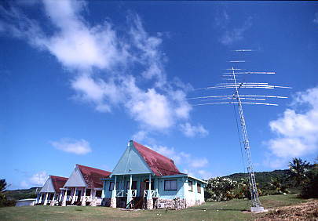

閉鎖が決まったサイパンのレンタルシャック
| 6m Today ! |
[Back Issues Feb.2004]
TIME:UTC(JST-09:00)
Report from JA1RJU (PM95sq)
29.Feb.2004(15:00c)
*VK-TV 04:00- 46.172 -- strong!
*9M-TV 04:00- 48.240/260 --
VK8MS 12:05 50.110 SSB
28.Feb.2004(15:00d)
*VK-TV 04:00- 46.172 -- strong!
VK4RGG/B 04:40- 50.058 CW Beacon
VK8RAS/B 04:40- 50.0467 CW Beacon
VK4JSR 04:48 50.110/140 SSB
VK4AHW 04:50 50.120 SSB
VK4TU 04:52 50.110/150 SSB
FK8SIX/B 05:00 50.0796 CW Beacon
VK4BLK 05:09 50.110/130 SSB
VK4ABP/B 05:10- 52.347 CW Beacon
VK4YRS 05:20 50.150 SSB
VK4FNQ 05:25 50.160 SSB
VK4APG 06:10 50.210 SSB (-07:00z F.Out)
|
◎ 午後から久しぶりに本格的なVK'sのオープンがあった。
1エリアでの入感エリアはVK4's、VK8とニューカレドニアのFK8のBeaconだけだったが3時間以上に渡り、
強力に入感していた。 サンスポットの低下で45/46MHz帯のZL/VKのTVもまともに入感しない日もあり、閑散とした6mが続いていたが、 今日は久しぶりに活気のあるQSOがバンドを賑わしていた。 2月下旬と言えば、サンスポット(SSN)最盛期なら朝方には南米やロングパスのヨーロッパ、 アフリカなどFBにオープンする時期なのだが、 SSNが50を切った昨今のコンデションではロングパスなど望むべくも無い。 本格的な春のDXシーズンは3、4月に掛けてなので、今シーズンも南太平洋から東南アジア、 インド洋方面にかけての中距離のDXの入感はまだ残りそうだが、オープン時間は短くQSOのチャンスは少なくなる。 |
27.Feb.2004(15:00c)
*VK-TV 04:10- 46.240 --
*VK-TV 05:00- 46.172 -- strong!
26.Feb.2004(15:00c)
*VK-TV 03:30- 46.172/240 --
VK4BLK 04:48 50.110 CW
VK4BLK 05:07 50.110/140 SSB/CW
VK4FNQ 06:09 50.110 SSB
25.Feb.2004(15:00d)
*VK-TV 04:20- 46.172 --
*9M-TV 07:00- 48.240/260 --
VK8RAS/B 07:10- 50.0467 CW Beacon
9M2TO/B 07:25- 50.005 CW Beacon
VK6RSX/B 08:00- 50.304 CW Beacon
VK8RAS/B 08:00- 50.0467 CW Beacon strong!
24.Feb.2004(15:00c)
*VK-TV 05:00- 46.172/240 --
|
◎ KH0(Saipan)のレンタルシャック、閉鎖 サイパン(KH0)の"レンタル・シャック"として親しまれてきたマリアナ・リゾートホテル内のシャックの閉鎖が決まった。 1997年に眺望抜群のホテルの高台に建つコテージに、バーテックスタンダード(旧・八重洲無線)の協力で開設されたシャックは、 周囲の環境もすばらしく、最新の機器で運用出来、海外運用を期待して訪れたJA局には"夢のシャック"だった。 今回、ホテルの改築計画の話が持ち上がりシャックとして使用中のコテージの建て替えも行われる。 この工事に伴いシャックの撤去の要請があり、無期限の閉鎖を行う事になったもの。 改築後の同所での再開についてはまだ未定だが、KH0以外の場所への移設も含め現在関係者で検討中。 関連グループの海外レンタル・シャックは、東マレーシア(9M6)のLangkah Syabas Beach Resort(Club局/9M6LSC)、 パラオ(T88)のPPR(Palau Pacific Resort)の2ヶ所のリゾートホテルが現在利用可能となっている。 |

23.Feb.2004(15:00d)
*ZL-TV 01:20- 45.24/25/26--
*VK-TV 04:10- 46.240 --
*VK-TV 05:20- 46.172/240 -- strong!
*9M-TV 05:20- 48.240/260 --
SM7BAE 10:29 50.031 JT65B EME (JA1)
22.Feb.2004(15:00c)
*ZL-TV 00:00- 45.24/25/26--
*VK-TV 03:00- 46.240 --
*VK-TV 05:00- 46.172/240 --
21.Feb.2004(24:00c)
WA4NJP 23:01 50.141/049 JT65B EME(JA1)
20.Feb.2004(15:00d)
*ZL-TV 02:50- 45.24/25/26--
*VK-TV 04:30- 46.172/240 --
T88LZ 07:43 50.110 CW (QSL JR1LZK)
*BY-TV 08:00- 49.750 --
VK4BLK 09:07 50.110/120 CW/SSB
19.Feb.2004(15:00c)
*BY-TV 01:00- 49.750 --
ZS6NK 03:20 50.011 JT65B EME(JA1)
VK8GF 07:33 50.110/125 SSB
18.Feb.2004(15:00b)
17.Feb.2004(15:00c)
*VK-TV 04:00- 46.172 --
FK8SIX/B 06:10- 50.0796 CW Beacon
VK4AHW 06:28 50.110 SSB
VK4RGG/B 06:30- 50.058 CW Beacon
VK4PU 06:34 50.110 CW
VK4AHW 06:47 50.110/125 SSB
16.Feb.2004(15:00b)
*ZL-TV 03:20- 45.250/260 --
15.Feb.2004(15:00c)
*ZL-TV 03:20- 45.250 --
DU1EV/B 11:15- 50.008 CW Beacon
N7ET/DU7 11:23 50.110 CW
14.Feb.2004(15:00c)
*VK-TV 04:40- 46.172 --
13.Feb.2004(15:00c)
*VK-TV 05:40- 46.172 -- weak
12.Feb.2004(15:00c)
*ZL-TV 03:00- 45.24/25/26--
*VK-TV 04:20- 46.172/240 -- weak
DU1EV/B 06:20- 50.008 CW Beacon
11.Feb.2004(15:00c)
*VK-TV 02:30- 46.240 --
*ZL-TV 03:30- 45.250 -- weak
*VK-TV 03:30- 46.172/240 -- strong!
*BY-TV 07:00- 49.750 -- strong!
10.Feb.2004(24:00c)
*ZL-TV 06:30- 45.250 -- weak
*VK-TV 06:30- 46.172/240 --
SM7BAE 23:35 50.0273 CW EME (JA1)
09.Feb.2004(15:00b)
08.Feb.2004(22:00c)
WA4NJP 10:40 50.040/133 JT65B EME (JA1)
IW5DHN 21:36 50.037 JT65B EME (JA1)
07.Feb.2004(15:00b)
W7GJ 10:10 50.090/190 JT65B EME (JA1.2)
06.Feb.2004(15:00c)
*VK-TV 06:00- 46.172 --
FK8SIX/B 06:30- 50.0796 CW Beacon
05.Feb.2004(15:00b)
04.Feb.2004(15:00c)
*ZL-TV 02:30- 45.250 --
*ZL-TV 03:30- 45.24/25/26--
03.Feb.2004(15:00d)
*VK-TV 03:30- 46.172/240 --
VK3XQ 05:14 50.110 SSB
VK3AMK 05:16 50.110 SSB
VK8RAS 05:20- 50.0468 CW Beacon
02.Feb.2004(15:00c)
*VK-TV 05:00- 46.172/240 --
*ZL-TV 06:20- 45.250 --
VK8RAS 06:55- 50.0468 CW Beacon
VK8GF 06:56 50.110 SSB CQ
01.Feb.2004(15:00c)
*ZL-TV 03:00- 45.24/25/26--
*VK-TV 03:00- 46.240 --
VK8RAS 05:40- 50.0468 CW Beacon